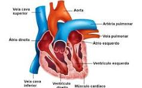

Sistema Cardiovascular
O sistema cardiovascular é responsável pelo transporte de oxigênio e nutrientes para as células do corpo, bem como pela remoção de resíduos metabólicos. É composto pelo coração, vasos sanguíneos e sangue.
Artérias
As artérias são vasos do sistema cardiovascular, por onde passa o sangue que sai do coração, sendo transportado para as outras partes do corpo. A musculatura das artérias é espessa, formada de tecido muscular bastante elástico. Permite, dessa maneira, que as paredes se contraiam e relaxem a cada batimento cardíaco. As artérias se ramificam e diminuem seu diâmetro que, por sua vez, desemborcam em vasos ainda mais finos, os capilares.
Veias
As veias são vasos do sistema cardiovascular que transportam o sangue das diversas partes do corpo de volta para o coração. Sua parede é mais fina que a das artérias e, portanto, o transporte do sangue é mais lento. Assim, a pressão do sangue no interior das veias é baixa, o que dificulta o seu retorno ao coração. A existência de válvulas nesses vasos, faz com que o sangue se desloque sempre em direção ao coração. Importante destacar que a maioria das veias (jugular, safena, cerebral e diversas outras) transporta sangue rico em gás carbônico. As veias pulmonares transportam sangue rico em oxigênio, dos pulmões para o coração.
Vasos Capilares
Os vasos capilares são ramificações microscópicas de artérias e veias, o que possibilita a formação de uma rede de comunicação entre os grandes vasos. Suas paredes são constituídas por uma camada finíssima de células que permite a troca de substâncias entre o sangue e as células e vice-versa. As substâncias que são trocadas são: oxigênio, gás carbônico, nutrientes, entre outras.
O Coração
O coração é um órgão do sistema cardiovascular localizado na caixa torácica, entre os pulmões. Possui a função de bombear o sangue através dos vasos sanguíneos para irrigar todo o corpo. É oco e musculoso, envolvido por uma membrana denominada pericárdio, e internamente as cavidades cardíacas são revestidas pela membrana chamada endocárdio. Suas paredes são constituídas por um músculo, o miocárdio, responsável pelas contrações do coração. O miocárdio apresenta internamente quatro cavidades: duas superiores denominadas átrios (direito e esquerdo) e duas inferiores denominadas ventrículos (direito e esquerdo). Os ventrículos possuem paredes mais grossas que os átrios. O átrio direito comunica-se com o ventrículo direito e o mesmo acontece do lado esquerdo. No entanto, não há comunicação entre os dois átrios, nem entre os dois ventrículos.
Para impedir o refluxo do sangue dos ventrículos para os átrios existem as valvas. Entre o átrio direito e o ventrículo direito é a valva tricúspide, já entre o átrio esquerdo e o ventrículo esquerdo é a mitral ou bicúspide. O coração possui dois tipos de movimentos: sístole e diástole. A sístole é o movimento de contração em que o sangue é bombeado para o corpo. A diástole é o movimento de relaxamento, quando o coração se enche de sangue.
Pulsação
A pulsação do sistema cardiovascular é observada a cada vez que os ventrículos se contraem, impulsionando o sangue para as artérias, ou a cada batida do coração. Por esse movimento de pulsação, também chamado de pulso arterial, é possível verificar a frequência dos batimentos cardíacos. Importante destacar que o coração é um órgão que funciona em ritmo constante. As irregularidades no seu ritmo, indicam o mau funcionamento do coração, caracterizadas pelas arritmias cardíacas. As arritmias podem se manifestar com palpitações, dificuldades respiratórias, dor no peito, tonturas e desmaios.
